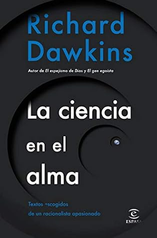

La ciencia en el alma
Reseña por Jorge I. Zuluaga

Ver reseña en GoodReads (necesita cuenta)
Aún así, debo confesar, no sin un poco de vergüenza, que este es el primer libro completo que leo suyo.
Hasta ahora, solo me había acercado a su pensamiento a través de fragmentos de sus libros (tengo varios sin leer en mi biblioteca que ahora me apuraré a desempolvar), artículos de prensa, conferencias o debates (el año pasado estuvo en Colombia; incluso tuve la increíble oportunidad de estar en un almuerzo con él en Parque Explora).
Este libro es entonces mi primera aproximación a fondo de su extensa obra. Una obra que algunos consideran podría merecer el segundo premio Nobel de Literatura para un científico.
Una idea que él mismo defiende en uno de los ensayos de este libro (quizás porque sabe que, al hacerlo, el premio podría caer sobre él... o tal vez no), a la manera como lo hizo Edwin Hubble cuando defendió la idea de que los astrónomos también podríamos recibir el premio Nobel de Física. Ojalá que, a diferencia de Hubble (que obviamente merecía el Nobel), quien murió antes de que se viera realizado su sueño, Dawkins reciba sin demora ese merecido reconocimiento.
La primera aproximación no podría ser mejor entonces que a través de una colección de ensayos muy diversos, ensayos que cubren temas no solo de evolución o etología (los temas de su especialidad como científico) o pensamiento escéptico y ateísmo militante (el tema por el que es mundialmente famoso... y universalmente odiado), sino también asuntos tan personales como la memoria de su familia, tan profundos como los valores de la ciencia o la ciencia de la religión, tan actuales para todos como la protección de los animales frente al ruido de los juegos artificiales, o tan ajenos a sus intereses como la existencia de vida extraterrestre e incluso la naturaleza del tiempo.
Por su diversidad, no hay duda de que "La ciencia en el alma" es una buena introducción a Richard Dawkins.
Sin embargo, hay algo que no me ha dejado del todo contento con esta colección de ensayos particular (de allí mi calificación del libro).
No sé si es la traducción al castellano (que confío ha sido realizada por los mejores; la edición que leí la publica Espasa, en la que tengo gran confianza). Me he encontrado con apartes mal redactados o aparentemente mal traducidos. Frases correctas, pero difíciles de entender (no creo que Dawkins escriba frases crípticas o confusas; la claridad lógica es una de sus cualidades más aplaudidas). Incluso errores evidentes (hasta me "pesqué" un error de ortografía muy evidente que me puso a dudar de la calidad del trabajo editorial... ¡nunca lo había hecho!).
No sé si es la elección de los ensayos o su organización. Así como se encuentra uno con un ensayo denso y difícil de leer como "Doce malentendidos sobre la selección por parentesco", que es en realidad la transcripción de un artículo científico (¡un artículo científico!... eso sí, sin referencias o figuras, pero igual de "incomprensible"), hay un prólogo (casi incomprensible también) de un libro (seguramente muy entretenido) escrito por su amigo Robert Mash; el prólogo está lleno de "referencias personales" que son irrelevantes para la mayoría de los lectores fuera de su círculo más íntimo.
La presentación que de cada parte del libro hace su editora, y que busca mostrar los "hilos" que conectan los ensayos, es, al menos para mí, prácticamente ilegible. Naturalmente, antes de leer los ensayos es difícil entender muchas de las conexiones que ella revela entre ellos. Pero, además, hay algo que no me cuadra del todo. Al final, me resultaba casi insoportable.
Si hubiera sido mi elección, jamás habría puesto el primer ensayo, "Los valores de la ciencia y la ciencia de los valores", como inicio del libro. El ensayo es pesado y relativamente lento. La mejor manera de ahuyentar a un lector casual. De modo que recomiendo al que vaya a leer el libro que no comience por ahí y que deje ese ensayo para un punto más avanzado en la lectura. Tal vez podría comenzar el libro leyendo en reversa la primera parte, comenzando con el ensayo "Dolittle y Darwin" para terminar con "Los valores de la ciencia y la ciencia de los valores".
O tal vez estoy completamente equivocado y es solo una impresión terriblemente subjetiva o producto de mi estado mental en el que empecé a leer el libro (la verdad, ninguno particularmente diferente, pero algo me pudo afectar).
Naturalmente, entre todos los ensayos, hay piezas de literatura maravillosas que conservaré para siempre. Me han gustado especialmente "Dolittle y Darwin" (muy personal), "Hablando en defensa de la ciencia" (una carta al príncipe Carlos), "Más darwiniano que Darwin" (sobre el fascinante y generoso personaje que fue Wallace, codescubridor de la evolución), "Los misiles teledirigidos del 11S" (sobre el peligro de la religión), "La ciencia de la religión" (una especulación sobre la base evolutiva del pensamiento religioso), "Ateos por Jesús" (una idea maravillosa... hacer viral la bondad como se hizo la tontería religiosa), "Ciencia y sensibilidad" (al mejor estilo saganiano), "Onirigel" (una droga hipotética muy real... lean para que entiendan cuál es). Y, por supuesto, "Homenaje a Hitch", uno de los más hermosos homenajes al gran Christopher Hitchens poco antes de morir, un verdadero ateo en las trincheras.
Me he divertido como niño extrayendo citas (¡muchas ya las vertí en Twitter! ¡síganme! je, je). Dawkins es una verdadera fuente de aforismos y de comentarios agudos sobre la sociedad, la política o la religión. Aquí les dejo estas perlas extraídas de algunos de estos ensayos:
- "Debemos tener la mente abierta, pero no tanto como para que se nos salga" (no es de él, pero la cita con frecuencia sin recordar la fuente... algunos dicen que es de Feynman).
- "No existen otros métodos más eficaces [de pensar que la ciencia]. Si existieran, ya la ciencia los habría incorporado".
- "La selección natural es como un robot que solo puede escalar hacia arriba, incluso si eso trae como consecuencia que se quede atrapado en la cima de un mísero montículo".
- "Con cien clones de Carl Sagan quizá tendríamos alguna esperanza para el siglo venidero".
- "El relativismo cultural es el mito más pernicioso derivado del paso atrás dado por el siglo XX al alejarse de la seguridad victoriana".
- "Forma parte de la naturaleza de las verdades científicas el hecho de que están esperando a ser descubiertas por cualquiera que tenga la capacidad de hacerlo".
- "La biología se está transformando en una rama de la informática".
- "La creencia irracional en una vida después de la muerte [...] es una fuerza letal".
- "Personalmente consideraría un honor ser fosilizado, pero no albergo muchas esperanzas de que así sea".
- "La religión enseña la peligrosa sandez de que la muerte no es el final".
- "Como intolerantes, los científicos son unos simples aficionados: nos gusta discutir con quienes no estamos de acuerdo; no matarlos".
- "Si las teorías científicas pudiesen votar, lo más seguro es que la evolución votara [por] los republicanos".
¡Larga vida a Dawkins!